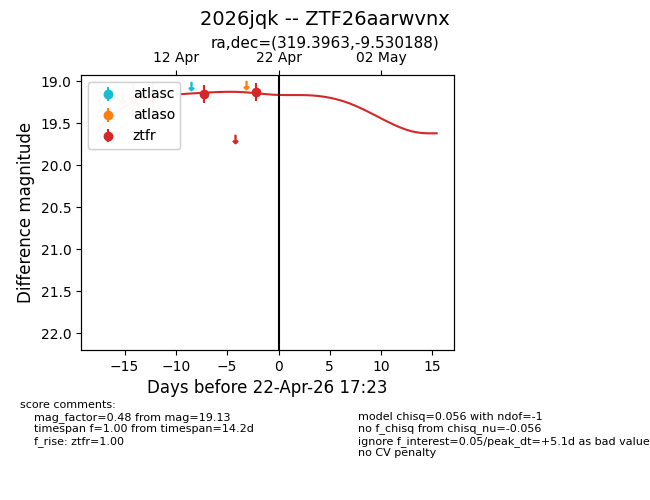
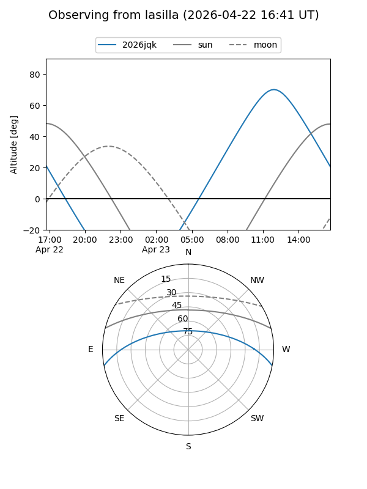
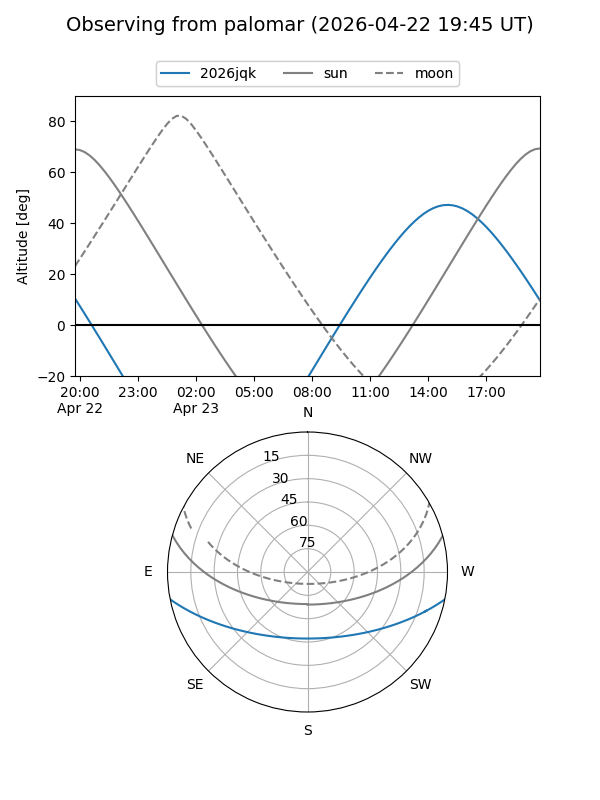
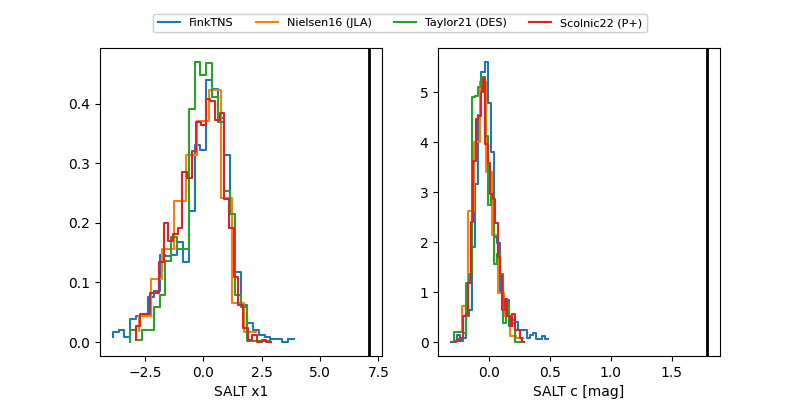

2026jqk
Target 2026jqk at 2026-04-22 17:26
Aliases and brokers:
FINK: link
Lasair: link
ALeRCE: link
TNS: link
YSE: link
alt names
ZTF26aarwvnx (ztf,fink_ztf)
2026jqk (tns,yse)
Coordinates:
equatorial (ra, dec) = 319.3963,-9.53019
equatorial (HMS+DMS) = 21:17:35.10,-09:31:48.68
galactic (l, b) = (41.5693,-36.72878)
Flags:
Photometry:
last ztfr=19.13
4 ztfr detections
Lightcurve

Visibility


Additional plots
